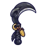

อีกาขโมยข้าวโพด
มอนธาตุลม Lv 5–38
เจอที่
| แมพ | โซน | Lv | ภูมิภาค |
|---|---|---|---|
| ไร่ฟักทอง | 5–10 | ป่ากองไฟ | |
| ไร่ฟักทอง | ไร่ข้าวโพด | 7–10 | ป่ากองไฟ |
| ถนนผู้อพยพ | 32–38 | ดินแดนเหนือ | |
| เขาวงกตข้าวโพด | 10–15 | ป่ากองไฟ | |
| เขาวงกตข้าวโพด | ทางเข้าเขาวงกต | 10–15 | ป่ากองไฟ |
| สนามรบเก่ากลางทุ่ง | 14–19 | ป่ากองไฟ | |
| ค่ายผู้อพยพร้าง | 32–38 | ดินแดนเหนือ | |
| สะพานไม้ข้ามแม่น้ำ | 32–38 | ดินแดนเหนือ | |
| ทางเกวียนในหุบ | 32–38 | ดินแดนเหนือ | |
| ไร่แตงโมใต้จันทร์ | 5–10 | ป่ากองไฟ | |
| ไร่แตงโมใต้จันทร์ | แตงโมยักษ์ผ่าซีก | 9–10 | ป่ากองไฟ |
| ลานกังหันสูบน้ำ | 5–10 | ป่ากองไฟ | |
| ลานกังหันสูบน้ำ | ใต้กังหันสูบน้ำ | 9–10 | ป่ากองไฟ |
| โรงบ่มฟักทองร้าง | 5–10 | ป่ากองไฟ | |
| โรงบ่มฟักทองร้าง | กองฟักทองแกะสลัก | 9–10 | ป่ากองไฟ |
ค่าสถานะตามเลเวล
| Lv | HP | ATK | DEF | MDEF | EXP | Job |
|---|---|---|---|---|---|---|
| 5 | 396 | 11–16 | 1 | 1 | 11 | 8 |
| 21 | 1,295 | 29–44 | 4 | 4 | 25 | 19 |
| 38 | 3,379 | 55–83 | 8 | 7 | 41 | 31 |
ตีด้วยธาตุไหนดี
แรงขึ้น: ดิน ×1.5 พิษ ×1.25
เบาลง: น้ำ ×0.5 ลม ×0.25
วัตถุดิบที่ดรอป
| ของ | โอกาส | |
|---|---|---|
| ขนอีกาสีรุ้ง | 60% | 1 ชิ้น (15% ได้ 2) |
อุปกรณ์ที่ดรอป (12)
| ของ | โอกาส |
|---|---|
| 0.25% | |
| ชุดโจรอีกาดำ (เสื้อ) | 0.15% |
| ชุดโจรอีกาดำ (กางเกง + รองเท้า) | 0.15% |
| 0.12% | |
| 0.12% | |
| 0.12% | |
| 0.12% | |
| 0.12% | |
| 0.12% | |
| 0.06% | |
 เคียวคู่จะงอยอีกา | 0.06% |
| ชุดโจรอีกาดำ (ขนอีกากับกระดุมเงา) | 0.05% |
สกิล
หลบ (Lv 25+) · หลบ (Lv 60+) · วาร์ป (Lv 60+)